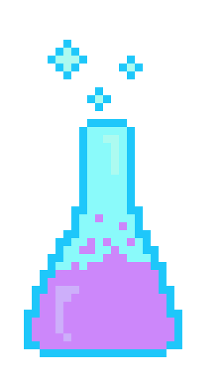
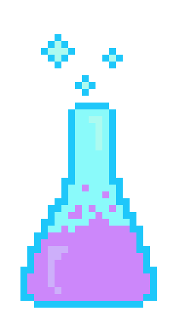

Call of Data

 

PLAY
The story, names, characters, and incidents portrayed in this production are fictitious.
No identification with actual persons (living or deceased), places, buildings, and products
(ahem, Call of Duty) is intended or should be inferred.
Hello [ Human ],
You’ve been recruited.
You’ve been recruited.

Your Mission Objective
Select Your Player


action number one: Data
There are currently two possible variables with which to measure X.
your first task is to choose which of these will most help president joe button.
Choice one
Choice two
Mission Results
You got: [Dynamic]
Your biases succesfully convinced Earth's keaders to [Dynamic]!
Your Resulting Visualization:
Toggle your decisions to view how wach of them biased the final visualization
View Sources
Sources
Images
Flask pixel art
Computer pixel art
Flowchart pixel art
Spaceman pixel art
Science cat pixel art
{kind=link}
Generic line chart
{kind=link}
Concept
Black Hat-White Hat Exercise
Disclaimer Text
Call of Duty Name Inspiration
Motivating Literature
“What Gets Counted Counts” by Catherine D’Ignazio
“Viral Visualizations: How Coronavirus Skeptics Use Orthodox Data Practices to Promote Unorthodox Science Online” - Crystal Lee et al.
"E"thical Dimensions of Visualization Research by Michael Correll"
"Why Authors Don’t Visualize Uncertainty" - Jessica Hullman
Coding